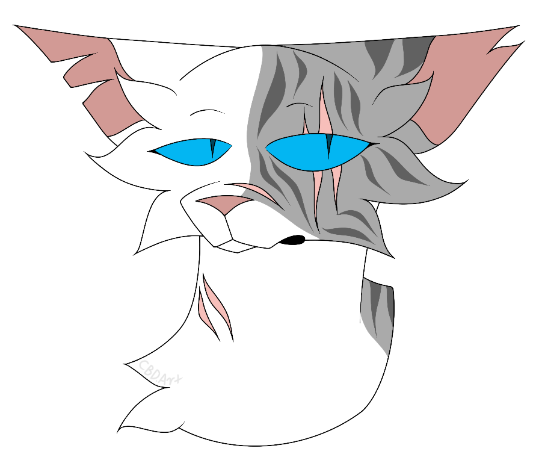

Character Trivia
'Warriors' is a series that has spanned many books over many years. Due to this, there are many characters, each with unique facts about them that can be either scattered throughout the books, or revealed by one of the series' many authors.
Tigerstar (Tigerclaw at the beginning of the series) was originally given the name Hammerclaw. This was obviously changed, as cats do not know what hammers are. Instead, the name Tigerclaw was given.
While there is no official cause of death for the kittypet, Jake, Victoria Holmes stated on her Facebook that Jake was struck by a meteor while sitting on a fence. This was confirmed to be a joke, however.
Hollyleaf was originally supposed to be one of the prophecy cats. She was later replaced by Dovewing, as Vicky could not think of a power that would suit her character.
The RiverClan elder known as Heavystep has died twice of the same cause (greencough), though he has been listed in alliegences that take place after both deaths.
Ferncloud's death was said by Vicky to be a result of the fans' dislike of her character. She was placed into the battle under the belief that she could fight like any warrior, and she died defending the nursery.
Sunstar, the ThunderClan leader before Bluestar, only recieved eight lives from StarClan when he became leader. This is because Pinestar kept his ninth life when he left to become a kittypet
Ivypool's name is taken from the name of a daughter of one of Vicky's friends, Ivy Poole
